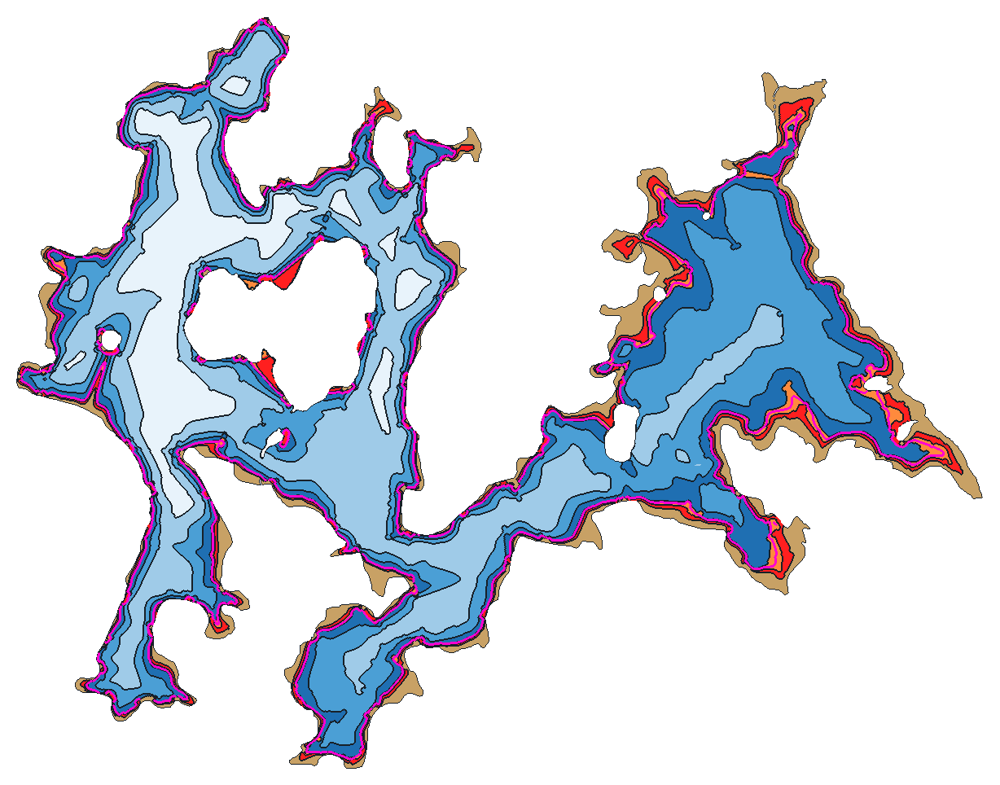

ReliefLac
Profondeur d'eau sur le lac de Vassivière, recalculée depuis la cote du jour.
—
m NGF
642 — navigation interdite650 — retenue normale
Modèle bathymétrique

Ce n'est pas un document nautique officiel. Les sondes de 2009 sont espacées
d'environ 100 m entre traces : un haut-fond isolé peut être absent du modèle. La cote
de référence du levé reste à confirmer, ce qui décale les profondeurs d'une constante.
Ne remplace ni un sondeur, ni la prudence.
État du chantier
- L0 — Données : terminé. Levé OFB, contour IGN, contrainte de bord, grille 5 m, relevé horaire de la cote.
- L1 — Carte et GPS : en cours. Position du bateau, fonds coloriés, mode Étalonnage.
- L2 à L4 : paramètres, fonctionnement hors ligne, calage au sondeur.